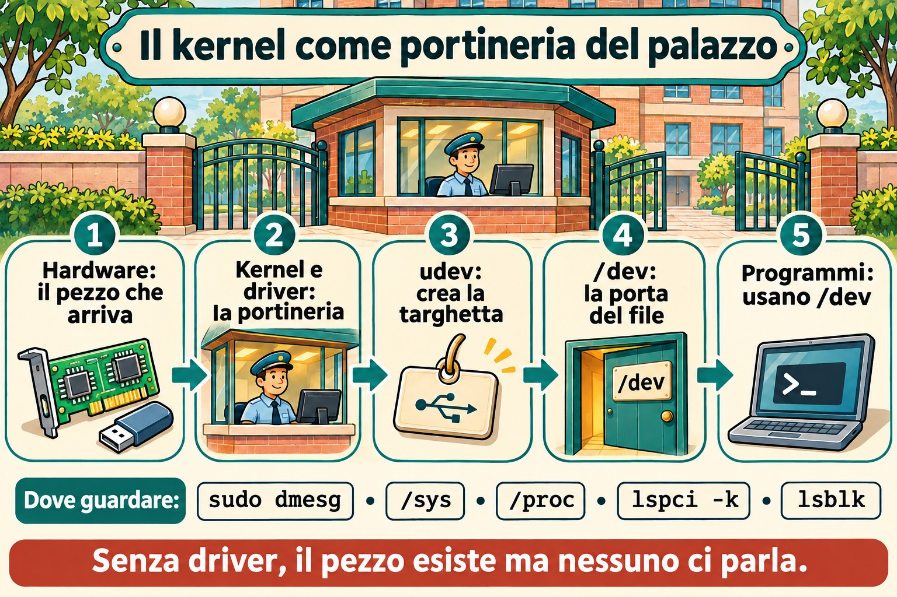
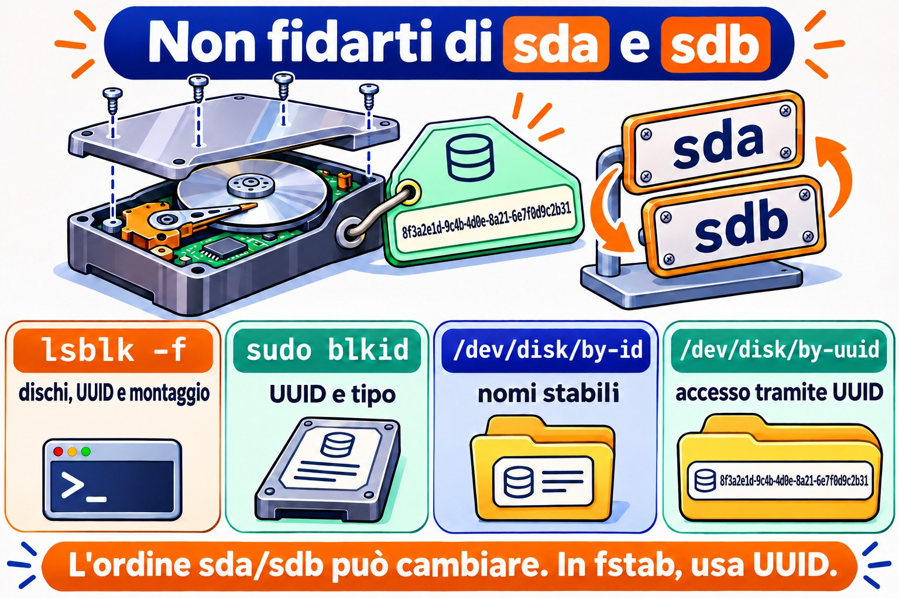

Lezione 5.1 · L'hardware visto dal kernel
Il kernel è quello che parla con l'hardware. Tutto ciò che vede, lo mostra in due posti: /proc e /sys. In questa lezione impari a chiedere al kernel quale hardware esiste, quale driver si occupa di ogni componente e cosa è successo quando qualcosa è stato collegato. In una VM vedrai anche che l'"hardware" è quello che Proxmox ha inventato per lei.
Il cuore di questa lezione:
lspci -k,lsblk,lsusb,dmesg(ojournalctl -k),/proc/cpuinfoe/proc/meminfo, l'idea di driver, e udev che crea i file in/dev. Il resto è approfondimento.
| Scheda | |
|---|---|
| Modulo | M5 · Hardware, kernel e virtualizzazione, lezione 1 di 3 |
| Quando | Settimana 9 |
| Settimana | 9 |
| Durata | 2 h – 2 h 30 |
| VM | rocky-lab (201) e debian-lab (202) |
| Prima | Snapshot m5a1-inicio su entrambe |
1 Riscaldamento
Rispondi senza cercare. Le risposte sono nelle Soluzioni.
- Se colleghi un disco nuovo a un server acceso, devi riavviare perché Linux lo veda?
- Cos'è un driver, in una frase?
- Dove annota il kernel ciò che è successo dal boot: in un normale file di log o altrove?
2 Perché conta
| Situazione reale | Cosa fai con questa lezione |
|---|---|
| Il cliente dice che "la scheda di rete è sparita" dopo un aggiornamento | lspci -k mostra se la scheda esiste e se un driver l'ha presa in carico |
| Hai aggiunto un disco su Proxmox e vuoi sapere come si chiama | lsblk e dmesg mostrano il disco nuovo, senza riavviare |
| Un server fisico è lento e sospetti del disco | dmesg mostra errori di I/O, reset del controller e settori danneggiati |
| Devi fare l'inventario di memoria e CPU di 20 macchine | /proc/meminfo, /proc/cpuinfo e lscpu danno la risposta via script |
3 Modello mentale
Pensa al kernel come alla portineria di un palazzo:
- Ogni componente hardware è un inquilino. Quando arriva, la portineria registra l'arrivo nel registro degli eventi, che è
dmesg. - Per ogni inquilino, la portineria assegna un addetto che sa parlargli: il driver. Senza addetto, l'inquilino esiste, ma nessuno gli parla.
/sysè l'anagrafica ordinata di tutti gli inquilini, per piano e per tipo./procè la bacheca con i numeri del giorno: memoria, CPU e processi.- udev è l'addetto che, a ogni arrivo, mette una targhetta sulla porta, cioè crea il file in
/dev, come/dev/sdb, e gli dà nomi stabili in/dev/disk/by-id.
I comandi lspci, lsusb e lsblk sono solo modi comodi per leggere quell'anagrafica.


4 L'essenziale
/proc e /sys
Sono entrambi file system virtuali: non occupano disco, e il kernel genera il contenuto nel momento in cui leggi.
| Percorso | Mostra |
|---|---|
/proc/cpuinfo | Ogni CPU, il modello e i flag, come vmx o svm per la virtualizzazione |
/proc/meminfo | Memoria totale, libera, disponibile, cache e swap |
/proc/cmdline | I parametri con cui è partito il kernel (4.4) |
/proc/partitions | I dischi e le partizioni che il kernel conosce |
/proc/interrupts e /proc/ioports | Interrupt e porte di I/O |
/sys/class/net/ | Una cartella per ogni scheda di rete |
/sys/block/ | Una cartella per ogni disco |
/sys/bus/pci/devices/ | Una voce per ogni dispositivo PCI |
Scorciatoie che leggono questi file al posto tuo: lscpu, free -h e lsmem.
I comandi ls*
| Comando | Elenca | Opzione più utile |
|---|---|---|
lspci | Dispositivi PCI: rete, disco, video | -k mostra il driver in uso; -nn mostra gli ID di produttore e modello |
lsusb | Dispositivi USB | -t li mostra ad albero |
lsblk | Dischi e partizioni | -f mostra il file system e l'UUID |
lscpu | CPU | nessuna opzione |
lshw | Tutto | -short dà un riepilogo; richiede root e, a volte, l'installazione |
Se lspci o lsusb non esistono, installa i pacchetti pciutils e usbutils.
Cos'è un driver
Un driver è il codice del kernel che sa parlare con un tipo di hardware. Può essere integrato nel kernel oppure essere un modulo caricato quando l'hardware compare. I moduli sono nella 5.2. In lspci -k, la riga Kernel driver in use dice chi ha preso in carico il dispositivo. Se non compare, nessun driver l'ha preso in carico, e il dispositivo non funziona.
dmesg e journalctl -k
Il kernel conserva i messaggi in un anello di memoria (ring buffer). Quando l'anello si riempie, i più vecchi spariscono.
sudo dmesg -T | less # -T: orario leggibile
sudo dmesg -w # segue in tempo reale
sudo dmesg -l err,warn # solo errori e avvisi
journalctl -k -b # messaggi del kernel di questo boot, via journal
journalctl -k -b -1 # del boot precedente, se il journal è persistentejournalctl -k ha un vantaggio: conserva i messaggi dei boot precedenti, cosa che dmesg non fa.
udev e /dev
Quando il kernel rileva un dispositivo, avvisa systemd-udevd. udev crea il file in /dev, imposta i permessi e crea i link stabili:
ls -l /dev/disk/by-id/ /dev/disk/by-uuid/ /dev/disk/by-path/
udevadm info /dev/sda # tutto quello che udev sa sul disco
sudo udevadm monitor # mostra gli eventi in tempo realeRegola d'oro: nomi come sda e sdb dipendono dall'ordine in cui compaiono i dischi e possono cambiare al prossimo boot. In /etc/fstab e negli script, usa l'UUID o il by-id.
Rocky × Debian
| Voce | Rocky | Debian |
|---|---|---|
dmesg senza sudo | Di solito funziona | Rifiutato: kernel.dmesg_restrict = 1 |
lspci nell'installazione minimale | Può mancare: dnf install pciutils | Può mancare: apt install pciutils |
| Regole di udev | /usr/lib/udev/rules.d/ (di sistema) e /etc/udev/rules.d/ (tue) | Uguali |
5 Lab guidato
Passo 0 · Snapshot e cartella
Sul nodo Proxmox:
qm snapshot 201 m5a1-inicio
qm snapshot 202 m5a1-inicioIn ogni VM:
mkdir -p ~/lab51 && cd ~/lab51Passo 1 · Inventario da /proc
In entrambe le VM:
lscpu | head -20
grep -c ^processor /proc/cpuinfo
grep -m1 'model name' /proc/cpuinfo
free -h
grep -E 'MemTotal|MemAvailable|SwapTotal' /proc/meminfo
cat /proc/partitions
lsblk -fConfronta il modello di CPU delle due VM con quello del nodo Proxmox. Con il tipo di CPU host, la VM vede lo stesso modello del processore fisico. Annota in ~/lab51/inventario.txt: CPU, memoria totale, dischi e partizioni.
Passo 2 · Chi è chi su PCI e USB
lspci
lspci -k | grep -A3 -iE 'ethernet|scsi|sata|virtio'
lsusb
lsusb -tVedrai dispositivi con il nome Red Hat, Inc. Virtio: sono i componenti virtuali che Proxmox (QEMU) offre, con driver virtio lato Linux. In lsusb compare un QEMU USB Tablet: è il mouse della console noVNC.
Annota: quale driver gestisce la scheda di rete, e quale gestisce il controller del disco?
Decidi 1
Nel prossimo passo aggiungerai un disco da 1 GB alla debian-lab, con la macchina accesa. Prima, rispondi: cosa mostra lsblk subito dopo?
- A) Niente di nuovo: il disco compare solo dopo il riavvio.
- B) Un disco nuovo,
sdbper esempio, senza partizioni. - C) Un disco nuovo, già con una partizione formattata.
Scegli un'opzione prima di continuare.
Passo 3 · Hotplug in tempo reale
Sulla debian-lab, apri due sessioni SSH. Nella prima:
sudo udevadm monitor --udev --subsystem-match=blockNella seconda:
sudo dmesg -wTOra aggiungi il disco. Dall'interfaccia di Proxmox: VM 202, poi Hardware, Add e Hard Disk, con bus SCSI, storage vm-hdd e dimensione 1 GB. Oppure, nella shell del nodo:
qm set 202 --scsi2 vm-hdd:1Guarda le due sessioni: dmesg mostra il kernel che trova il disco, e udevadm monitor mostra l'evento add per udev. Ferma entrambi con Ctrl+C e controlla:
| Se hai scelto | Risultato | Perché |
|---|---|---|
| A | Sbagliato | Il bus SCSI virtuale avvisa subito il kernel: questo è hotplug |
| B | Giusto | Il kernel vede il disco, e udev crea /dev/sdb. Un disco nuovo arriva vuoto |
| C | Sbagliato | Nessuno partiziona né formatta da solo. Tocca a te, nell'M9 |
lsblk
ls -l /dev/disk/by-id/ | grep -v part
udevadm info /dev/sdb | head -30Verifica dalla dimensione quale nome ha preso il disco da 1 GB. Il disco da 2 GB della Lezione 2.2 è già su scsi1 e di solito è sdb; allora quello nuovo diventa sdc. Usa il nome che hai visto nel resto della lezione al posto di sdb, e non toccare il disco da 2 GB: è dell'M9.
Da ricordare: un disco nuovo compare senza riavviare, e il nome sdX è solo l'ordine di arrivo. Il nome stabile è in /dev/disk/by-id.
Decidi 2
In entrambe le VM, come utente normale e senza sudo, esegui dmesg | tail -3. Cosa succede?
- A) Entrambe mostrano i messaggi.
- B) Entrambe rifiutano.
- C) Una mostra, e l'altra rifiuta.
Scegli un'opzione prima di continuare. Poi eseguilo su entrambe, e anche sysctl kernel.dmesg_restrict.
| Se hai scelto | Risultato | Perché |
|---|---|---|
| A | Sbagliato | Debian protegge l'anello del kernel dagli utenti normali |
| B | Sbagliato, nella maggior parte delle installazioni | Rocky di solito ha dmesg_restrict = 0 |
| C | Giusto | Debian ha kernel.dmesg_restrict = 1, e Rocky normalmente 0. Controlla il valore reale nelle tue VM |
Da ricordare: dmesg può rivelare indirizzi e dettagli utili a un attaccante. Per questo Debian lo limita. In uno script di monitoraggio, eseguilo con sudo o usa journalctl -k in un gruppo con accesso al journal.
Passo 4 · Un giro in /sys
ls /sys/class/net/
cat /sys/class/net/*/address
cat /sys/class/net/*/operstate
cat /sys/block/sdb/size # in settori da 512 byte
echo $(( $(cat /sys/block/sdb/size) * 512 / 1024 / 1024 )) MiB
cat /sys/block/sdb/queue/rotational # 1 = disco rotante, 0 = SSD o virtuale che non lo dice
readlink -f /sys/class/net/*/device/driverNota: lsblk e ip link, che già usi, leggono esattamente questi file.
6 Rompi e ripara
Farai "dimenticare" al kernel il disco di test e poi gli farai cercarlo di nuovo, senza riavviare. È quello che si fa su un server fisico quando un disco nuovo non compare.


Prima, ricontrolla con lsblk che sdb sia il disco da 1 GB e che non abbia nulla montato. Non farlo mai sul disco di sistema.
lsblk /dev/sdb
echo 1 | sudo tee /sys/block/sdb/device/delete
lsblk
sudo dmesg | tail -5Il disco è sparito per Linux, anche se resta collegato alla VM. Ora, senza guardare la risposta qui sotto, prova a scoprire come dirgli di cercarlo di nuovo. Suggerimento: il percorso è in /sys/class/scsi_host/.
La riparazione:
for h in /sys/class/scsi_host/host*/scan; do echo "- - -" | sudo tee "$h" >/dev/null; done
lsblkI tre trattini significano "qualsiasi canale, qualsiasi target, qualsiasi LUN". Il disco ritorna, a volte con un altro nome. Per questo, ancora una volta, script e fstab usano UUID o by-id.
7 Trappole
- Fidarsi di
sdaesdb. L'ordine può cambiare in un boot con un disco in più o in meno. Usa UUID oby-id. - Pensare che
dmesgconservi tutto. L'anello ha una dimensione fissa e si azzera al boot. Per lo storico, usajournalctl -k, con il journal persistente della 3.x. - Dimenticare
-kinlspci. Senza, vedi l'hardware ma non il driver, che è proprio ciò che conta in un "la scheda è sparita". - Eseguire
device/deletesul disco sbagliato. Il sistema perde il disco con tutto ciò che c'è montato sopra. Verifica dalla dimensione e dalsblkprima. - Modificare i file in
/usr/lib/udev/rules.d/. Il prossimo aggiornamento li sovrascrive. Le tue regole vanno in/etc/udev/rules.d/. - Aspettarsi di vedere l'hardware fisico in una VM. Dentro la VM vedi l'hardware virtuale che Proxmox offre. La salute dei dischi fisici si controlla sul nodo, non nella VM.
8 Quiz
- Qual è la differenza tra
/proce/sys, in una frase ciascuno? - Quale comando mostra quale driver ha preso in carico la scheda di rete?
- Perché non si usa
/dev/sdbin/etc/fstab? - In quale file ci sono gli interrupt in uso?
- Come vedere i messaggi del kernel del boot precedente?
- What does udev do when the kernel detects a new device?
9 Promemoria
Da sapere a memoria
| Comando | Fa |
|---|---|
lspci -k | Dispositivi PCI e il driver di ciascuno |
lsusb / lsusb -t | Dispositivi USB, in elenco o ad albero |
lsblk -f | Dischi, partizioni, file system e UUID |
lscpu / free -h | CPU e memoria |
sudo dmesg -T / -w | Messaggi del kernel, con orario, o in tempo reale |
journalctl -k -b / -b -1 | Messaggi del kernel di questo boot o del precedente |
udevadm info /dev/X / udevadm monitor | Cosa sa udev di un dispositivo / eventi in tempo reale |
/dev/disk/by-id, by-uuid | Nomi stabili dei dischi |
Da consultare
lspci -nn, lspci -v, lshw -short, lsmem, /proc/interrupts, /proc/ioports, /proc/dma, /sys/class/, /sys/bus/pci/devices/, /sys/block/*/queue/rotational, /sys/class/scsi_host/host*/scan, /sys/block/*/device/delete, /etc/udev/rules.d/, udevadm trigger, kernel.dmesg_restrict.
Flashcard
| Domanda | Risposta |
|---|---|
/proc e /sys occupano disco? | No: il kernel genera il contenuto al momento |
Chi crea i file in /dev? | udev (systemd-udevd) |
| Un disco nuovo in una VM accesa richiede il reboot? | No: è hotplug |
| Dove stanno le regole udev dell'amministratore? | /etc/udev/rules.d/ |
Perché dmesg fallisce senza sudo su Debian? | kernel.dmesg_restrict = 1 |
10 Checklist e chiusura
- [ ] Ho fatto l'inventario di CPU, memoria e dischi da
/proce con i comandils* - [ ] Ho trovato il driver della scheda di rete e del controller del disco
- [ ] Ho visto un disco entrare in tempo reale in
dmesge inudevadm monitor - [ ] Ho capito perché
dmesgsi comporta in modo diverso nelle due distro - [ ] Ho fatto dimenticare un disco al kernel e gliel'ho fatto cercare di nuovo
- [ ] So perché i nomi
sdXnon vanno bene per fstab
Ultimo esercizio, senza guardare la lezione: rimuovi il disco di test nel modo pulito. Prima, dentro la debian-lab, fai in modo che il kernel lo rilasci:
echo 1 | sudo tee /sys/block/sdb/device/deletePoi, nell'interfaccia di Proxmox, vai su VM 202, poi Hardware, seleziona il disco scsi2, clicca Detach e poi Remove sul Unused Disk. Questo cancella il disco di test da 1 GB, che è vuoto.
Riavvio e verifica: riavvia le due VM e controlla:
lsblk # só os discos originais
systemctl is-system-running # running
ls ~/lab51Snapshot di fine, nel nodo Proxmox:
qm snapshot 201 m5a1-fim
qm snapshot 202 m5a1-fim11 Nella vita reale
Missione, sola lettura. Su un server reale che amministri, meglio se fisico, esegui soltanto questi comandi, che non cambiano nulla:
lscpu | grep -E 'Model name|^CPU\(s\)'
free -h
lsblk -o NAME,SIZE,TYPE,MODEL,ROTA,MOUNTPOINTS
lspci -k | grep -A3 -iE 'ethernet|raid|sas|nvme'
sudo dmesg -T -l err,warn | tail -20
journalctl -k -p warning -b --no-pager | tail -20Rispondi: i dischi sono rotanti o SSD? La scheda di rete ha un driver in uso? Gli errori e gli avvisi del kernel parlano di disco, memoria o rete? Su un server fisico, messaggi con I/O error, reset o Machine Check meritano una chiacchierata con il responsabile. Non cambiare nulla da solo.
Diario: scrivi tre righe su ciò che hai imparato oggi e un dubbio che ti è rimasto.
Domani, senza guardare:
- Di' tre file di
/proce cosa mostra ciascuno. - Scrivi il comando che mostra il driver di ogni dispositivo PCI.
- Spiega, in una frase, cosa fa udev quando arriva un disco.
12 Approfondire quando vuoi
- Scrivere una regola udev in
/etc/udev/rules.d/che dia un nome fisso a un disco o a una scheda di rete. udevadm testeudevadm triggerper provare le regole senza collegare nulla.- Salute dell'hardware fisico:
smartctl(pacchettosmartmontools),rasdaemone i messaggi EDAC della memoria. lshw -htmlper un inventario completo in forma di pagina.- Coldplug: come udev rielabora, al boot, i dispositivi che c'erano già.
In DeepTutor: !explica /proc, /sys e /dev, !feynman o que o udev faz, !quiz hardware pelo kernel.
Soluzioni commentate
Riscaldamento
- In genere no. Dischi SAS, SATA con hotplug, NVMe con supporto e dischi virtuali compaiono a macchina accesa. Se non compaiono, si può chiedere una nuova scansione tramite
/sys. - Un driver è il codice del kernel che sa parlare con un tipo di hardware.
- In un anello di memoria del kernel, letto da
dmesg. Anche il journal ne conserva una copia, chejournalctl -klegge.
Quiz
/procmostra processi e numeri del kernel, come memoria e CPU./sysmostra i dispositivi e i driver in modo ordinato, per bus e per tipo.lspci -k, nella riga Kernel driver in use.- Perché il nome
sdXdipende dall'ordine in cui compaiono i dischi e può cambiare. L'UUID e ilby-idnon cambiano. - In
/proc/interrupts. journalctl -k -b -1, purché il journal sia persistente.- udev receives the kernel event, creates the device file in /dev with the right permissions, adds stable symlinks such as /dev/disk/by-id, and runs any matching rules.